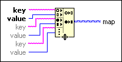

Build Map Function
Owning Palette: Map VIs and Functions
Requires: Base Development System
Creates a map from the input key-value entries. For entries with duplicate keys, this function includes only the last entry in the resulting map.

 Add to the block diagram Add to the block diagram |
 Find on the palette Find on the palette |